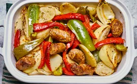

Odin Recipes
Cozy Dinner

Description:
This sausage and potato bake is an Italian comfort food classic!
The smell of this cooking in my kitchen transports me back to playing
on the street in front of my Papa and Gigi’s house in Brooklyn.
I make 2 trays of this for every family get-together, and it’s gone in a flash!
Ingredients
The ingredients in this bake are quite simple —
and you probably already have most of them on hand. Here’s what you’ll need:
- Olive Oil
The olive oil is used for cooking your sausage, potatoes, and veggies in the skillet.
- Italian Sausage
Choose your favorite Italian sausage (mild, medium, or hot will work) for this recipe.
- Potatoes
You can use whatever potatoes you like, as long as you peel and slice them.
But for faster cooking and less chopping, try smaller red potatoes or fingerlings so you can eat them whole.
- Bell Peppers
Both red and green bell peppers are used in this recipe — and, hey, if you have yellow or orange, throw those in too!
- Onions
Yellow onions will work best here for their caramelized flavor.
- White Wine
White wine adds flavor to the veggies and sausage. Plus, it keeps the dish moist during baking.
- Chicken Stock
This recipe uses chicken stock, though you can use any stock you have on hand in a pinch.
- Seasonins
Lightly season the sausage and vegetables with Italian seasoning, salt, and pepper.
Steps
- Step 1:
Gather all ingredients.
- Step 2:
Preheat the oven to 400 degrees F (200 degrees C).
- Step 3:
Heat 2 teaspoons olive oil in a large skillet over medium heat,
and cook and stir the sausage until browned, 5 to 10 minutes.
Transfer cooked sausage to a large baking dish.
- Step 4:
Pour 1/4 cup of olive oil into the skillet,
and cook potatoes, stirring occasionally, until browned, about 10 minutes.
- Step 5:
Place the potatoes into the baking dish, leaving some oil in the skillet.
- Step 6:
Cook and stir green and red peppers and onions in the hot skillet
until they are beginning to soften, about 5 minutes.
- Step 7:
Add the vegetables to the baking dish. Pour wine and chicken stock
over the vegetables and sausage, and sprinkle with Italian seasoning, salt, and pepper.
- Step 8:
Gently stir sausage, potatoes, and vegetables together.
- Step 9:
Bake in the preheated oven until hot and bubbling, 20 to 25 minutes. Serve hot.